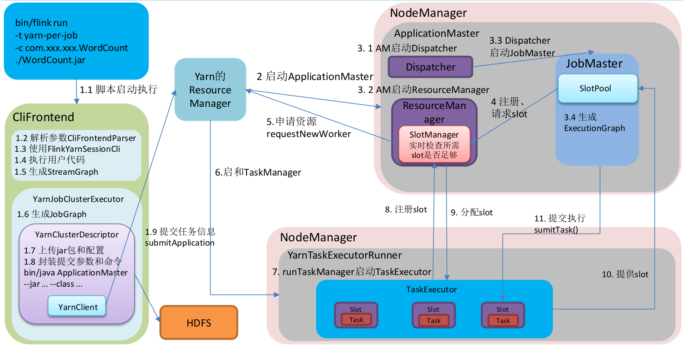

Ch03-Flink 之 Job 执行流程
November 4, 2020
Flink Job 执行流程
1. Application Mode #
bin/flink run-application -t yarn-application ./examples/streaming/TopSpeedWindowing.jar
2. Per-Job Mode #
bin/flink run -t yarn-per-job --detached ./examples/streaming/TopSpeedWindowing.jar

3. Session Mode #
bin/flink run -t yarn-session -Dyarn.application.id=application_XXXX_YY ./examples/streaming/TopSpeedWindowing.jar